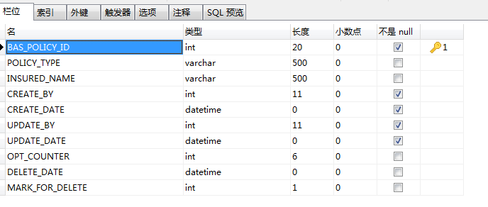
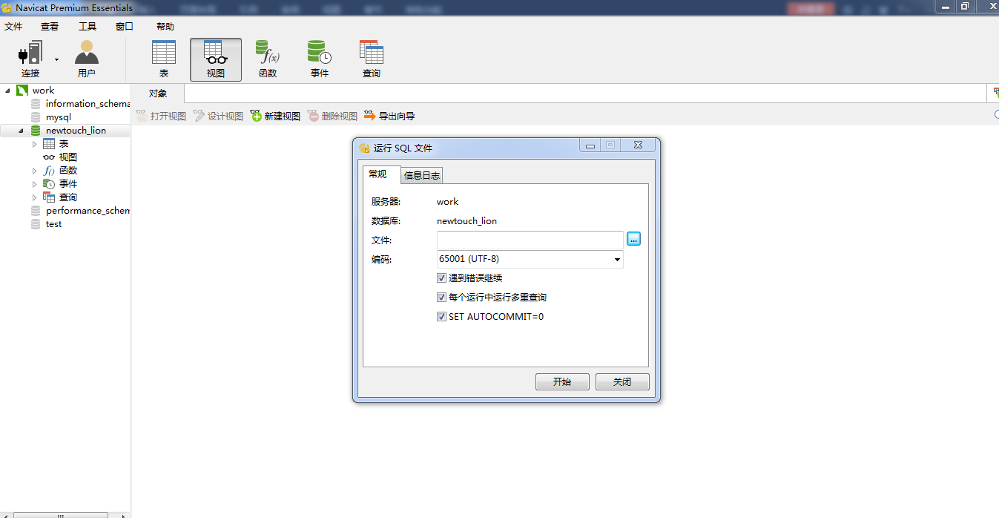
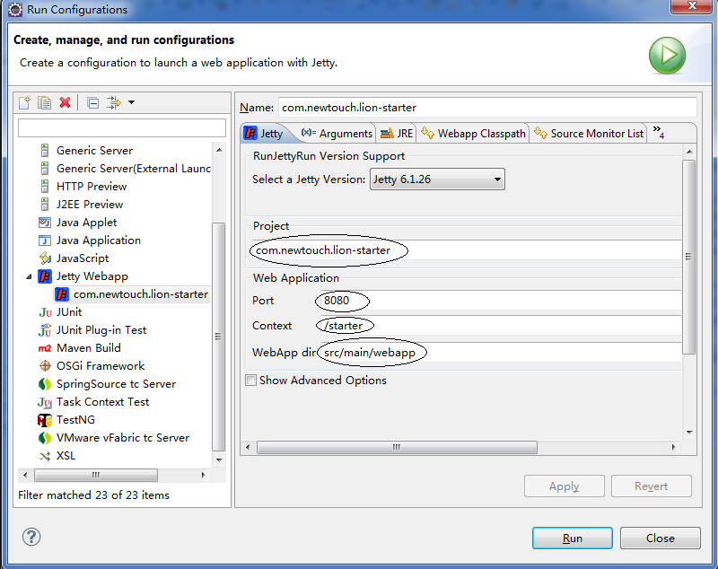
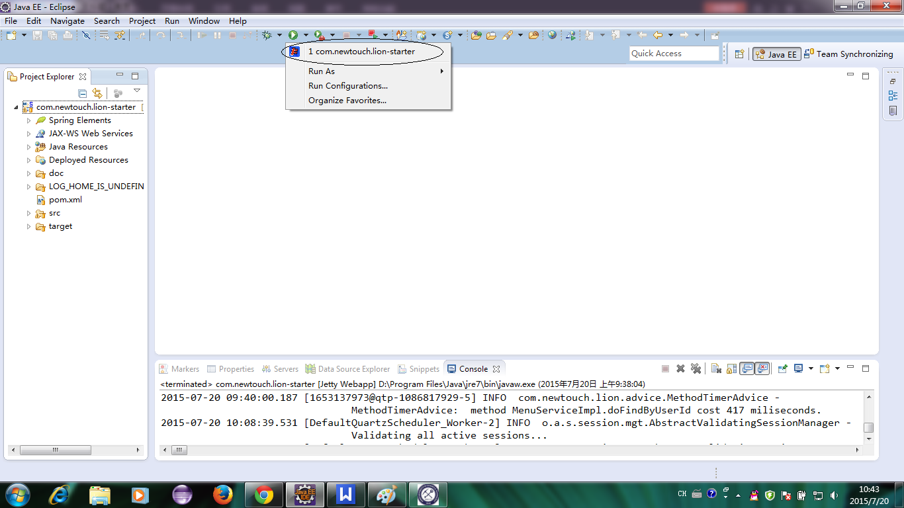
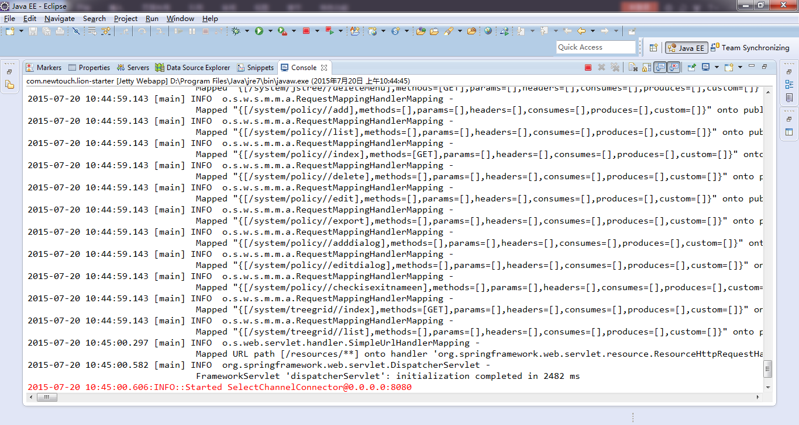
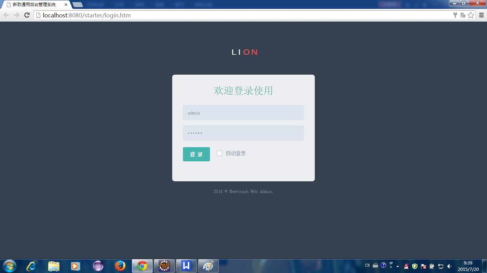
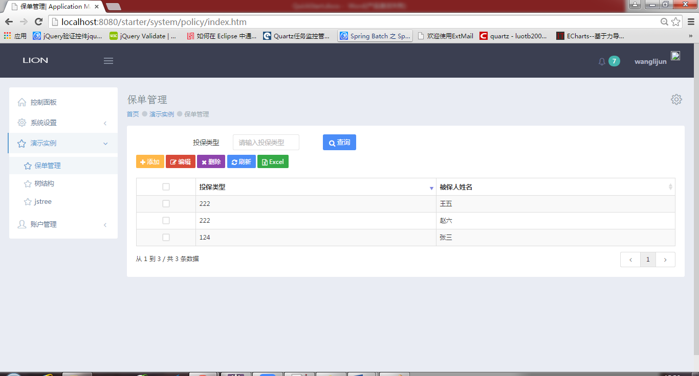
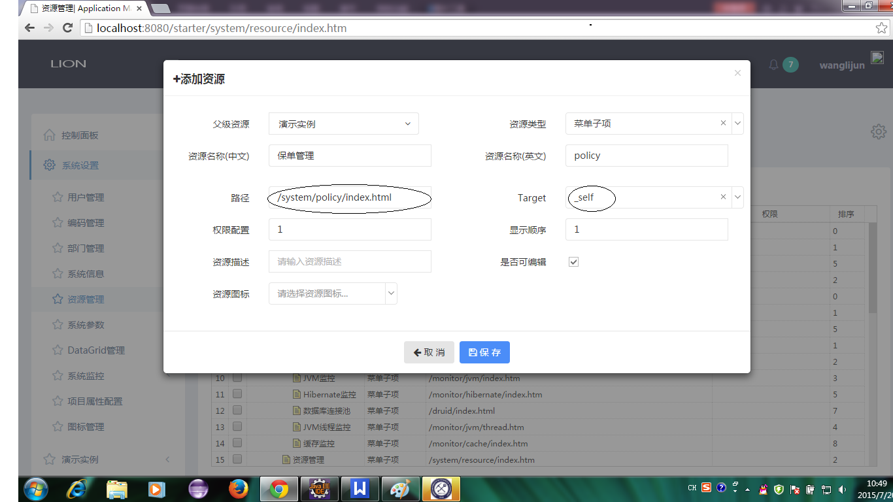
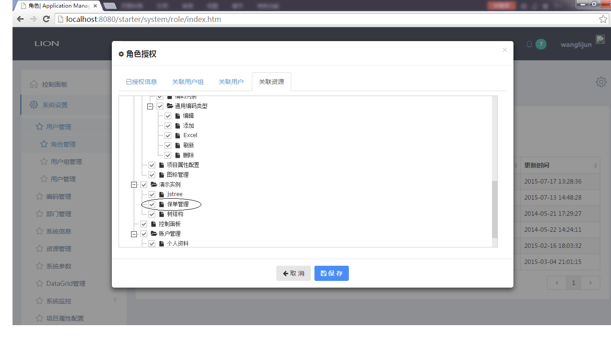
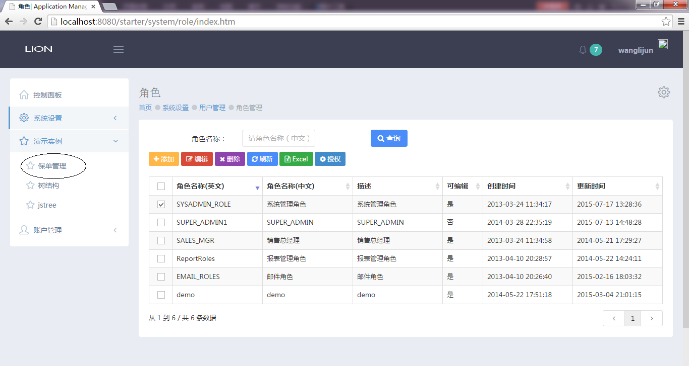

本框架使用maven对jar包进行管理，在开发过程中，如果需要另外引用jar包的话，可以在pom.xml文件中引用，引用方式如下(标红的部分即为引入的得内容)：
<?xml version="1.0"?>
<project
xsi:schemaLocation="http://maven.apache.org/POM/4.0.0 http://maven.apache.org/xsd/maven-4.0.0.xsd"
xmlns="http://maven.apache.org/POM/4.0.0" xmlns:xsi="http://www.w3.org/2001/XMLSchema-instance">
<modelVersion>4.0.0</modelVersion>
<parent>
<groupId>com.newtouch.lion</groupId>
<artifactId>com.newtouch.lion-parent</artifactId>
<version>0.1.2-SNAPSHOT</version>
</parent>
<artifactId>com.newtouch.lion-starter</artifactId>
<name>lion-starter</name>
<version>${lion-webadmin.version}</version>
<packaging>war</packaging>
<url>http://maven.apache.org</url>
<dependencies>
<dependency>
<groupId>com.newtouch.lion</groupId>
<artifactId>com.newtouch.lion-web</artifactId>
</dependency>
<!-- lion End -->
</dependencies>
<build>
<finalName>com.newtouch.lion-webmain</finalName>
</build>
</project>
本例使用MySQL数据库，使用Navicat Premium作为数据库的可视化界面。
新建一个数据库，数据库名为newtouch_lion，用户名为root，密码为newtouch，新建一个BAS_POLICY表,如下：

将数据源导入数据库，打开Navicat Premium，打开连接，新建数据库newtouch_lion，选中newtouch_lion，点击右键，点击运行SQL文件如下图所示，找到所需要的数据源，点击运行即可将数据源导入。

本框架在src/main/resources文件夹下的application.properties中连接数据库。下面以MySQL为例（数据库名：newtouch_lion，用户名：root,密码：newtouch），连接方式如下(红色部分即为连接MySQL部分)：
#数据库配置#integrated testing 数据库 Mysql #MySQL database.driverClassName=com.mysql.jdbc.Driver database.jdbcurl=jdbc:mysql://220.248.17.34:3309/newtouch_lion?useUnicode=true&characterEncoding=UTF-8 database.user=root database.password=newtouch database.initialSize=1 database.minIdle=1 database.maxActive=5 database.prefix=oracle #日志配置 log.development=true log.appname=loin log.outdir=loin
该层共分三部：新建BAS_POLICY对应的类、配置映射文件、注册映射文件。
1）新建BAS_POLICY对应的类
新建一个Policy类，并新建一个PolicyVo类作为中间类
--------------------------------Policy类----------------------------------
package com.newtouch.starter.policy;
import java.io.Serializable;
import com.newtouch.lion.model.VersionEntity;
public class Policy extends VersionEntity<Long> implements Serializable {
private static final long serialVersionUID = -6327022095298899613L;
private Long id; //保单ID
private String policyType; //保单类型
private String insuredName; //被保人姓名
public Long getId() {
return id;
}
public void setId(Long id) {
this.id = id;
}
public String getPolicyType() {
return policyType;
}
public void setPolicyType(String policyType) {
this.policyType = policyType;
}
public String getInsuredName() {
return insuredName;
}
public void setInsuredName(String insuredName) {
this.insuredName = insuredName;
}
public Policy(Long id, String policyType, String insuredName) {
super();
this.id = id;
this.policyType = policyType;
this.insuredName = insuredName;
}
@Override
public String toString() {
return "Policy [id=" + id + ", policyType=" + policyType
+ ", insuredName=" + insuredName + "]";
}
}
--------------------------------PolicyVo类----------------------------------
package com.newtouch.starter.policy;
import java.io.Serializable;
public class PolicyVo implements Serializable{
private static final long serialVersionUID = -6327022095298899613L;
private Long id; //保单ID
private String policyType; //保单类型
private String insuredName; //被保人姓名
public Long getId() {
return id;
}
public void setId(Long id) {
this.id = id;
}
public String getPolicyType() {
return policyType;
}
public void setPolicyType(String policyType) {
this.policyType = policyType;
}
public String getInsuredName() {
return insuredName;
}
public void setInsuredName(String insuredName) {
this.insuredName = insuredName;
}
@Override
public String toString() {
return "PolicyVo [id=" + id + ", policyType=" + policyType
+ ", insuredName=" + insuredName + "]";
}
public PolicyVo() {
super();
}
public PolicyVo(Long id, String policyType, String insuredName) {
super();
this.id = id;
this.policyType = policyType;
this.insuredName = insuredName;
}
}
在src/main/resources/model文件夹下新建置文件bas_serviceBean.mysql.orm.xml，并在文件中配置Policy的属性。
<?xml version="1.0" encoding="UTF-8"?>
<entity-mappings xmlns="http://java.sun.com/xml/ns/persistence/orm"
xmlns:xsi="http://www.w3.org/2001/XMLSchema-instance"
xsi:schemaLocation="http://java.sun.com/xml/ns/persistence/orm http://java.sun.com/xml/ns/persistence/orm_2_0.xsd"
version="2.0">
<package>com.newtouch.starter.policy</package>
<access>PROPERTY</access>
<!-- 保单信息 -->
<entity class="Policy">
<table name="BAS_POLICY" />
<attributes>
<id name="id">
<column name="policy_id" unique="true" nullable="false" precision="11" scale="0" />
<generated-value strategy="IDENTITY" />
</id>
<basic name="policyType">
<column name="POLICY_TYPE" length="500" nullable="true"/>
</basic>
<basic name="insuredName">
<column name="INSURED_NAME" length="500" nullable="true"/>
</basic>
</attributes>
</entity>
</entity-mappings>
<?xml version="1.0" encoding="UTF-8"?>
<beans xmlns="http://www.springframework.org/schema/beans"
xmlns:xsi="http://www.w3.org/2001/XMLSchema-instance"
xsi:schemaLocation="http://www.springframework.org/schema/beans http://www.springframework.org/schema/beans/spring-beans-3.1.xsd">
<!-- Hibernate Common Configuraction -->
<bean class="org.springframework.orm.jpa.support.PersistenceAnnotationBeanPostProcessor" />
<bean class="org.springframework.dao.annotation.PersistenceExceptionTranslationPostProcessor" />
<!-- 指定JPA持久化提供商，此处使用Hibernate实现HibernatePersistence类 -->
<bean id="persistenceProvider" class="org.hibernate.ejb.HibernatePersistence" />
<!-- 如果指定jpaVendorAdapter此属性可选，此处为HibernateJpaDialect -->
<bean id="jpaDialect" class="org.springframework.orm.jpa.vendor.HibernateJpaDialect" />
<!-- 指定实现厂商专用特性，即generateDdl= false表示不自动生成DDL，database= HSQL表示使用hsqldb数据库 -->
<bean id="jpaVendorAdapter" class="org.springframework.orm.jpa.vendor.HibernateJpaVendorAdapter">
<property name="generateDdl" value="false" />
<property name="database" value="HSQL" />
</bean>
<!-- 配置hibernate session工厂 -->
<bean id="entityManagerFactory" class="org.springframework.orm.jpa.LocalContainerEntityManagerFactoryBean">
<property name="dataSource" ref="dataSource" />
<property name="persistenceProvider" ref="persistenceProvider" />
<!-- <property name="persistenceXmlLocation" value="classpath:META-INF/persistence-mysql.xml"></property>-->
<property name="mappingResources">
<list>
<value>model/application/bas_app_properties.${database.prefix}.orm.xml</value>
<value>model/datagrid/bas_datagrid.${database.prefix}.orm.xml</value>
<value>model/system/bas_demo.${database.prefix}.orm.xml</value>
<value>model/system/bas_common.${database.prefix}.orm.xml</value>
<value>model/system/bas_login_log.${database.prefix}.orm.xml</value>
<value>model/system/bas_system.${database.prefix}.orm.xml</value>
<value>model/system/bas_tasks.${database.prefix}.orm.xml</value>
<value>model/bas_policy.${database.prefix}.orm.xml</value>
<value>model/system/bas_reminder.${database.prefix}.orm.xml</value>
</list>
</property>
<property name="jpaProperties">
<props>
<!-- <prop key="hibernate.hbm2ddl.auto">${hibernate.hbm2ddl.auto}</prop>-->
<prop key="hibernate.dialect">${hibernate.dialect}</prop>
<prop key="hibernate.show_sql">${hibernate.show_sql}</prop>
<prop key="hibernate.format_sql">${hibernate.format_sql}</prop>
<prop key="hibernate.use_sql_comments">${hibernate.use_sql_comments}</prop>
<prop key="hibernate.generate_statistics">${hibernate.generate_statistics}</prop>
<prop key="hibernate.max_fetch_depth">${hibernate.max_fetch_depth}</prop>
<prop key="hibernate.jdbc.batch_size">${hibernate.jdbc.batch_size}</prop>
<prop key="hibernate.jdbc.fetch_size">${hibernate.jdbc.fetch_size}</prop>
<prop key="hibernate.max_fetch_depth">${hibernate.max_fetch_depth}</prop>
<prop key="hibernate.cache.use_query_cache">${hibernate.cache.use_query_cache}</prop>
<prop key="hibernate.cache.use_second_level_cache">${hibernate.cache.use_second_level_cache}</prop>
<prop key="hibernate.cache.provider_class">${hibernate.cache.provider_class}</prop>
<prop key="hibernate.cache.region.factory_class">${hibernate.cache.region.factory_class}</prop>
<prop key="current_session_context_class">thread</prop>
</props>
</property>
</bean>
</beans>
将配置文件注册到src/main/resources/dao文件下的applicationContext-jpa.xml中，如下所示（红色字体标识的）
该层写接口及其实现类
新建一个PolicyDao接口
package com.newtouch.starter.dao;
import com.newtouch.lion.dao.BaseDao;
import com.newtouch.starter.policy.Policy;
public interface PolicyDao extends BaseDao<Policy, Long> {
}
新建一个类PolicyDaoImpl，实现PolicyDao
package com.newtouch.starter.dao;
import org.springframework.stereotype.Repository;
import com.newtouch.lion.dao.impl.BaseDaoImpl;
import com.newtouch.starter.policy.Policy;
@Repository
public class PolicyDaoImpl extends BaseDaoImpl<Policy, Long> implements PolicyDao {
private static final long serialVersionUID = -1494476134711376183L;
}
该层写接口及其实现类
新建口PolicyService
package com.newtouch.starter.service;
import com.newtouch.lion.page.PageResult;
import com.newtouch.lion.query.QueryCriteria;
import com.newtouch.starter.policy.Policy;
public interface PolicyService {
/**
* 分页查询保单信息
* @param queryCriteria
* @return
*/
public PageResult<Policy> doFindByCriteria(QueryCriteria queryCriteria);
}
新建一个类PolicyServiceImpl，实现PolicyService
package com.newtouch.starter.service;
import java.util.Map;
import org.springframework.beans.factory.annotation.Autowired;
import org.springframework.stereotype.Service;
import com.newtouch.lion.common.sql.HqlUtils;
import com.newtouch.lion.page.PageResult;
import com.newtouch.lion.query.QueryCriteria;
import com.newtouch.lion.service.AbstractService;
import com.newtouch.starter.dao.PolicyDao;
import com.newtouch.starter.policy.Policy;
@Service
public class PolicyServiceImpl extends AbstractService implements
PolicyService {
@Autowired
private PolicyDao policyDao;
@Override
public PageResult<Policy> doFindByCriteria(QueryCriteria criteria) {
String queryEntry = " from Policy ";
String[] whereBodies = {"policyType like:policyType"};
String fromJoinSubClause = "";
Map<String, Object> params = criteria.getQueryCondition();
String orderField = criteria.getOrderField();
String orderDirection = criteria.getOrderDirection();
String hql = HqlUtils.generateHql(queryEntry, fromJoinSubClause, whereBodies, orderField, orderDirection, params);
int pageSize = criteria.getPageSize();
int startIndex = criteria.getStartIndex();
PageResult<Policy> pageResult = this.policyDao.query(hql, HqlUtils.generateCountHql(hql, null), params, startIndex, pageSize);
return pageResult;
}
}
该层价格为用户介绍国际化、前台js及前台html文件的写法
编辑国际化时，建立一个国际化文件，并将该文件注册到dispatcher-servlet.xm文件中
sys.policy.html.title=保单管理 sys.policy.html.policyType=投保类型 sys.policy.html.tip.policyType=请输入投保类型 sys.policy.html.pinsuredName=被保人姓名
① 在src/main/resources/i18n/system下新建一个policy文件夹，在该文件夹下新建两个文件，policy_en_US.properties（用于存放英文数据）和policy_zh_CN.properties（用于存放中文数据），在policy_zh_CN.properties中内容如下：
② 将国际化的文件在dispatcher-servlet.xml中注册如下（表红色的部分）
<!-- i18n -->
<bean id="messageSource" class="org.springframework.context.support.ReloadableResourceBundleMessageSource">
<property name="basenames">
<list>
<value>classpath:i18n/messages</value>
<value>classpath:i18n/login/login</value>
<value>classpath:i18n/system/application/applicationProperty</value>
<value>classpath:i18n/system/policy/policy</value>
<value>classpath:i18n/system/icon/icon</value>
<value>classpath:i18n/system/reminder/reminder</value>
</list>
</property>
<property name="defaultEncoding" value="UTF-8" />
<property name="fallbackToSystemLocale" value="true" />
<property name="useCodeAsDefaultMessage" value="false" />
</bean>
在src/mian/webapp/resourves/admin/scripts/system下新建一个policy.js文件
var icondg=$('#sys_policy_tb'); //datagrids
var queryForm=$('#queryform');
$(function(){
//默认加载函数
lion.web.AppInit();
//验证表单
icondg=$('#sys_policy_tb'); //datagrids
queryForm=$('#queryform');
//查询
$('#btnQuery').click(function(){
icondg.datagrids({querydata:queryForm.serializeObject()});
var queryparam=icondg.datagrids('queryparams');
icondg.datagrids('reload');
});
//刷新
$('#btnRefresh').click(function(){
icondg.datagrids('reload');
});
});
在src/mian/webapp/WEB-INF/view/system下新建一个policy文件夹，在policy文件夹下新建一个index.ftl文件
<#assign base = request.contextPath/>
<!DOCTYPE html>
<html lang="en" class="no-js">
<head>
<title> <@spring.message "sys.policy.html.title"/></title>
<link href="${base}/resources/global/plugins/ztree/css/metro.css" rel="stylesheet" type="text/css"/>
<link href="${base}/resources/global/plugins/bootstrap-select/bootstrap-select.min.css" rel="stylesheet" type="text/css" />
<link href="${base}/resources/global/plugins/bootstrap-toastr/toastr.css" rel="stylesheet" type="text/css">
<!--DataTable css Start-->
<link rel="stylesheet" type="text/css" href="${base}/resources/global/plugins/select2/select2.css"/>
<link rel="stylesheet" type="text/css" href="${base}/resources/global/plugins/datatables/extensions/Scroller/css/dataTables.scroller.min.css"/>
<link rel="stylesheet" type="text/css" href="${base}/resources/global/plugins/datatables/extensions/ColReorder/css/dataTables.colReorder.min.css"/>
<link rel="stylesheet" type="text/css" href="${base}/resources/global/plugins/datatables/plugins/bootstrap/dataTables.bootstrap.css"/>
<!--DataTable css End-->
<link href="${base}/resources/global/plugins/bootstrap-select/bootstrap-select.min.css" rel="stylesheet" type="text/css" />
<link href="${base}/resources/global/css/lion.css" rel="stylesheet" type="text/css" />
<link href="${base}/resources/global/css/combotree/combotree.css" rel="stylesheet" type="text/css" />
<!-- DataTables js Start -->
<script type="text/javascript" src="${base}/resources/global/plugins/select2/select2.min.js"></script>
<script type="text/javascript" src="${base}/resources/global/plugins/datatables/media/js/jquery.dataTables.js"></script>
<script type="text/javascript" src="${base}/resources/global/plugins/datatables/extensions/TableTools/js/dataTables.tableTools.js"></script>
<script type="text/javascript" src="${base}/resources/global/plugins/datatables/extensions/ColReorder/js/dataTables.colReorder.js"></script>
<script type="text/javascript" src="${base}/resources/global/plugins/datatables/extensions/Scroller/js/dataTables.scroller.js"></script>
<script type="text/javascript" src="${base}/resources/global/plugins/datatables/plugins/bootstrap/dataTables.bootstrap.js"></script>
<!-- DataTables js End -->
<script src="${base}/resources/global/plugins/bootbox/bootbox.min.js" type="text/javascript"></script>
<script src="${base}/resources/global/plugins/bootstrap-toastr/toastr.min.js"></script>
<script src="${base}/resources/admin/pages/scripts/ui-toastr.js"></script>
<script src="${base}/resources/global/plugins/jquery-validation/js/jquery.validate.min.js" type="text/javascript"></script>
<!--lion UI JS Start-->
<script src="${base}/resources/global/js/lion.js" type="text/javascript"></script>
<script src="${base}/resources/global/js/form/form.fill.js" type="text/javascript"></script>
<script src="${base}/resources/global/js/local/lion-lang-zh_CN.js" type="text/javascript"></script>
<script src="${base}/resources/global/js/combotree/combotree.js" type="text/javascript"></script>
<script src="${base}/resources/global/js/datagrid/datagrids.js" type="text/javascript"></script>
<!--ztree js-->
<script src="${base}/resources/global/plugins/ztree/js/jquery.ztree.all-3.5.min.js" type="text/javascript"></script>
<!--lang-->
<script src="${base}/resources/admin/scripts/admin-common.js" type="text/javascript"></script>
<!-- tasks -->
<script src="${base}/resources/admin/scripts/system/policy.js" type="text/javascript"></script>
</head>
<body class="page-header-fixed page-sidebar-closed-hide-logo page-sidebar-closed-hide-logo">
<!-- BEGIN PAGE CONTENT INNER -->
<div class="portlet light">
<div class="portlet-body">
<div class="row">
<div class="col-md-12 margin-bottom-10">
<form id="queryform" class="form-horizontal">
<label class="control-label col-md-2" for="nameZh" >
<@spring.message "sys.policy.html.policyType"/>
</label>
<div class="col-md-2">
<input class="form-control input-small" type="text" size="30" name="name" id="name" placeholder="<@spring.message "sys.policy.html.tip.policyType"/>" />
</div>
<div class="col-md-2">
<a href="javascript:void(0)" id="btnQuery" class="btn blue">
<i class="fa fa-search"></i>
<@spring.message "common.query.btn.text"/>
</a>
</div>
</form>
</div>
<div class="col-md-12 margin-bottom-10" id="toolbar">
<a id="btnAdd" class="btn btn-sm yellow" data-toggle="modal" href="#basic">
<i class="fa fa-plus"></i>
<@spring.message "common.toolbar.btn.add.text"/>
</a>
<a id="btnEdit" class="btn btn-sm red">
<i class="fa fa-edit"></i>
<@spring.message "common.toolbar.btn.edit.text"/>
</a>
<a id="btnDelete" class="btn btn-sm purple">
<i class="fa fa-times"></i>
<@spring.message "common.toolbar.btn.delete.text"/>
</a>
<a id="btnRefresh" class="btn btn-sm blue">
<i class="fa fa-refresh"></i>
<@spring.message "common.toolbar.btn.reload.text"/>
</a>
<a href="javascript:void(0)" id="btnExport" class="btn btn-sm green">
<i class="fa fa-file-excel-o"></i>
<@spring.message "common.toolbar.btn.export.text"/>
</a>
</div>
<div class="col-md-12">
<table class="lion-datagrids table table-striped table-bordered table-hover" id="sys_policy_tb" data-singleselect="true", data-loadUrl="${base}/system/policy/list.json" data-checkbox="true" data-pageSize="10">
<thead>
<tr>
<th class="table-checkbox" data-field='id' data-checkbox="true">
<input type="checkbox" class="group-checkable" data-set="#sys_policy_tb.checkboxes" data-sortable="false" />
</th>
<th data-field='policyType' data-sortDir="asc" style="width:100px;">
<@spring.message "sys.policy.html.policyType"/>
</th>
<th data-field="insuredName" style="width:100px;">
<@spring.message "sys.policy.html.pinsuredName"/>
</th>
</tr>
</thead>
</table>
</div>
</div>
</div>
</div>
</body>
</html>
右击项目---》run as--->Run Configurations,右击Jetty Webapp---new即可，按照要求，相应的配置如下：

配置完成后，点击Run按钮即可启动。
此时我们回到eclipse开发界面，鼠标点击启动按钮右边的三角，即可出现我们配置好的项目名称，点击该名称即可成功启动项目。如下图：

启动成功后，将会在控制台显示出如下界面

在浏览器中输入网址：http://localhost:8080/starter/login.htm即可进入登陆页面

输入用户名，密码，即可登陆，在浏览器中输入网址：
http://localhost:8080/starter/system/policy/index.htm即可登陆一编辑的policy页面，如图：

运行项目，进入系统设置—》资源管理，添加资源，如下图所示

进入用管理—》角色管理下，选中系统管理角色并授权，选中关联资源，找到刚才添加的资源保存即可，如下图：

添加成功后效果图如下：
